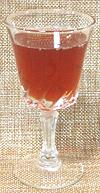

SAFARI
Users
Dried Plum Snacks
Traditional and very popular in China, these dried plums are very tart and salty, but with a sweet plum undertone. The photo specimens, from Taiwan, are a little smaller, moister and milder than some I've encountered. The largest were just under 1 inch long and 0.7 inch wide. Ingred: dried plums, sugar, salt, licorice. Note that these may also be made from Chinese / Japanese Plum (Prunus salicina).
Plum Sauce / Duck Sauce
This sweet/sour sauce is used in China particularly with roasted duck,
but also as a dip for fried foods and spring rolls. Ingred: sugar,
plum pulp, vinegar, salt, ginger, chili (Yuet Heung Yuen brand).
Umeboshi - Pickled Plums
These sour salty pickled plums are much appreciated in Japan and Korea, though the photo specimens were made in China. They vary in color depending on how much purple perilla leaf is used. Those that are fluorescent red are dyed with food colorings and probably non-traditional in other ways as well. The traditional method takes about 6 months.
The most common use, described in most of my Japanese cookbooks, is
as a center for rice balls. They are otherwise associated with rice,
particularly for breakfast. Umeboshe paste is used to flavor sauces
and vinegar for salad dressings. Ingred: salted plums, perilla, salt,
honey, monosodium glutamate, citric acid, ethyl alcohol, vitamin B1,
fructose, sugar, glucose syrup.
Umeboshi Vinegar

[Ume su (Japan)]
Not actually vinegar, this is the brine drained from Umoboshe before
packing. It is moderately sour, slightly fruity and extremely
salty, but considered a health food by the Michio Kushi Macrobiotics
movement. They claim that in Japan it is a common seasoning, but my 21
Japanese cookbooks don't mention it. One with complete instructions on
making umeboshe doesn't mention using the brine. The only one with
"umeboshe" and "vinegar" in the same paragraph describes infusing rice
vinegar with crushed umeboshe. How much of this product is used in
Japan I can not determine, but in North America the Macriobotics people
are the major, and perhaps only, consumers. I have found it only at
Sprouts, a major purveyor to the Yuppie class. While several other
brands are exported to North America, you are most likely to find that
of Eden Foods, a distributor closely related to the Macrobiotics
movement.
Matchsoon - Plum Wine
The photo specimen is a product of Korea, where this plum wine is a
popular product, but it is also appreciated in Japan and China. Typically
bottled at 14% alcohol. I consider this a moderately sweet desert wine,
but in Korea and Japan it may accompany sashimi and sushi. I usually
have beer with my sushi.
Plum Liqueur
Made in Kobe, Japan, this liqueur includes whole plums in the jar. It is basically an infusion of plum in distilled alcohol, bottled at 42% alcohol (21 Proof).